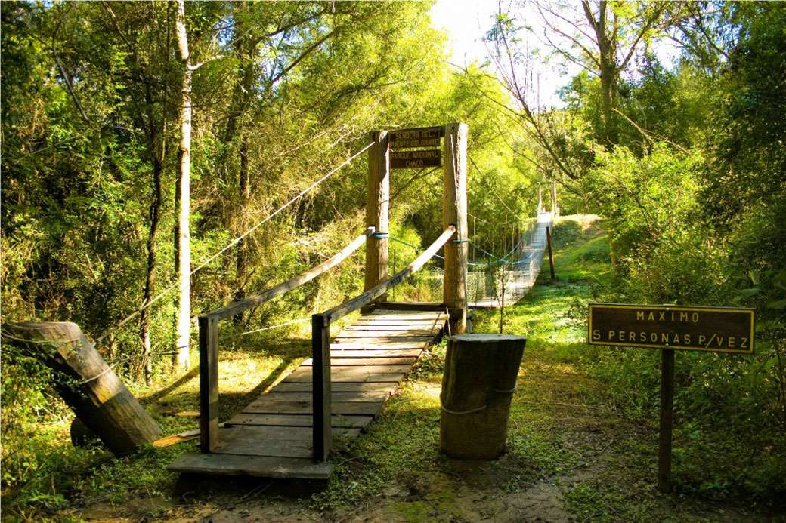
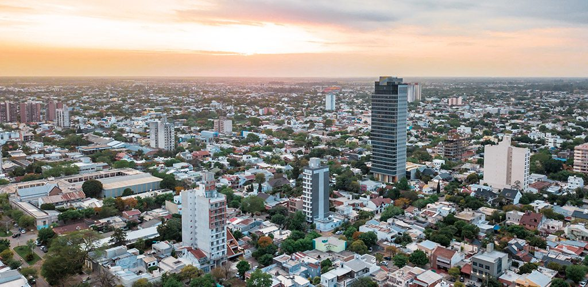
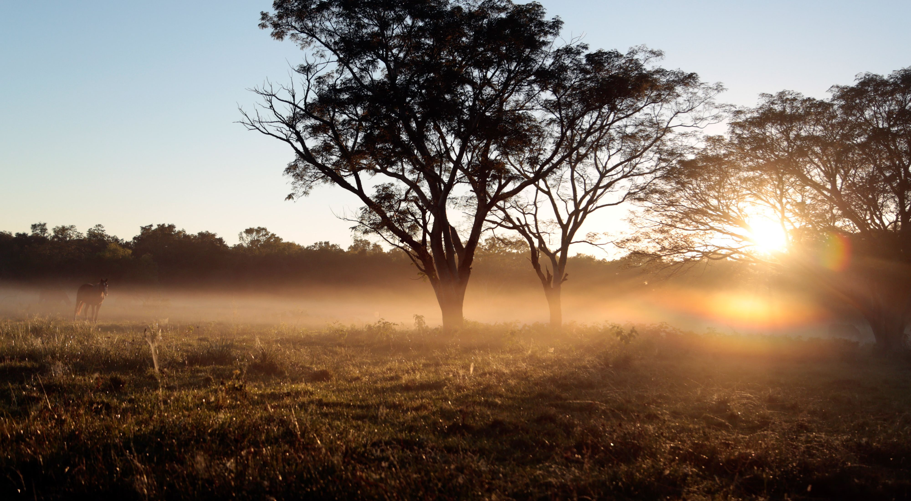
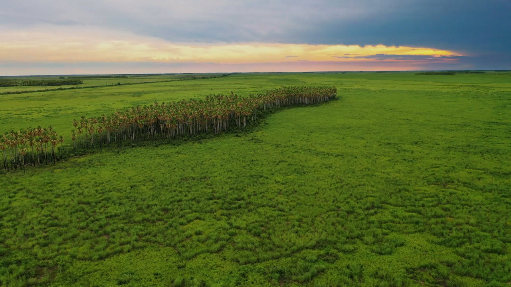
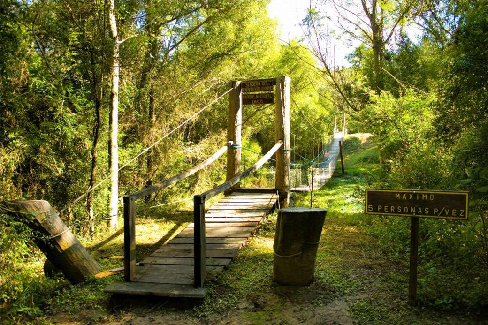
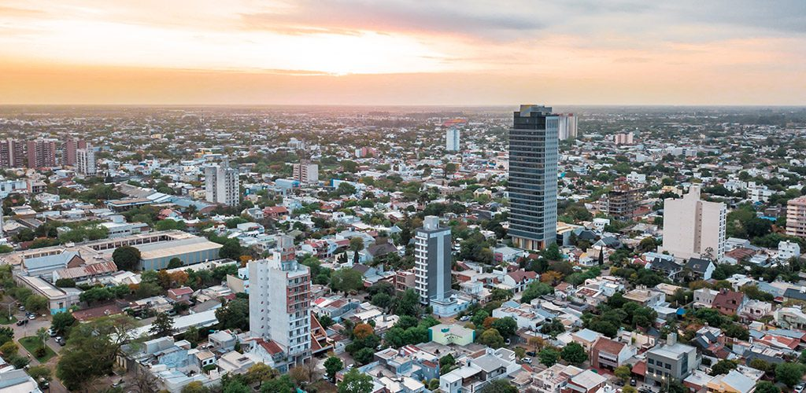
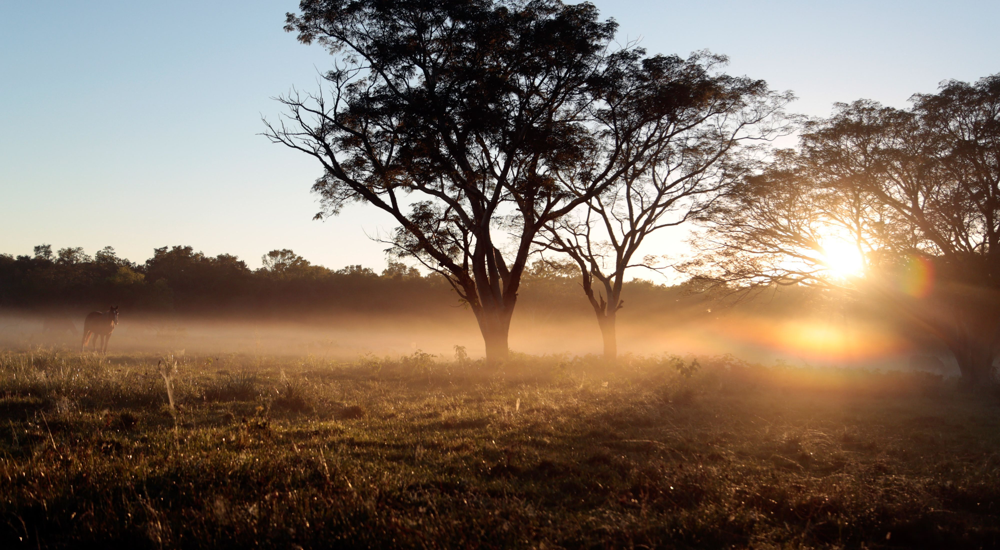
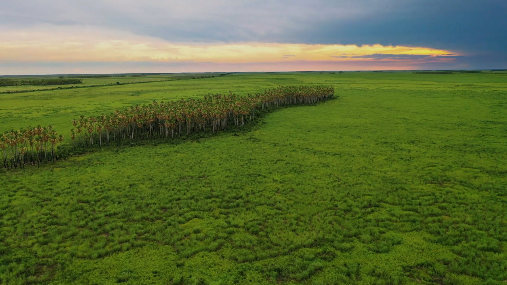

El Chaco, provincia argentina en el noreste, es un tesoro de naturaleza y cultura ancestral. Su capital, Resistencia, es un crisol de tradiciones indígenas y modernidad. La provincia es hogar de una rica diversidad de fauna y flora en sus reservas naturales como El Impenetrable y Laguna Blanca. La producción de algodón, ganadería y agricultura son pilares económicos, junto con la artesanía chaqueña reconocida por sus tejidos y cerámicas. Las fiestas populares como la Fiesta Nacional del Algodón reflejan la identidad y el orgullo chaqueño. El Chaco es un destino auténtico que invita a descubrir sus raíces y su naturaleza exuberante.
 






